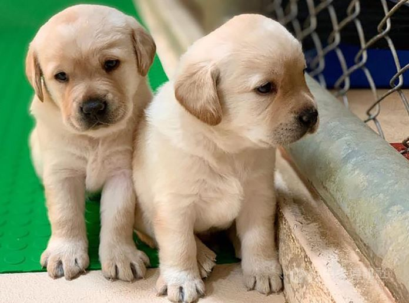

拉不拉多
外表
毛屬短毛，外層直且緊密內則為柔軟且能防水禦寒的內層毛皮，如水獺般的跟腳趾間的蹼使牠們非常適於游泳。拉布拉多的標準顏色有三種：黑色、黃色、巧克力色。是由兩組基因控制，一組控制毛色有黑黃兩種，另一組控制鼻頭的顏色有黑色跟粉紅色，巧克力色是黑色基因跟粉紅色鼻頭基因的組合，黃色系拉布拉多則有兩種鼻頭顏色的可能，而黑色就是全深色的組合。
性格
拉不拉多是相當均衡和非常全面的一個品種，適用於許多功能同時也是很好的寵物。它們很容易被訓練，是一個服從性高的犬種。它們是值得分享你的愛的忠實夥伴。它們是非常友好的狗，尤其是對待小孩子們。通常它們不具備出現在其他犬類中的麻煩特性，比如：占地盤、不安全、具攻擊性、具破壞能力、不規則地敏感等。犬如其名，它們是出色的尋回犬。
歷史
拉不拉多被認為源自於紐芬蘭島，紐芬蘭島如今是加拿大紐芬蘭與拉布拉多省的一部分。拉布拉多來自於聖·約翰水犬（已絕跡），這種狗是一種本地的水狗和紐芬蘭狗的雜交，和拉布拉多的淵源頗深。Earl of Malmesbury和其他英格蘭飼養主們為了把這種狗和紐芬蘭犬區分開而將它們起名為「拉布拉多」。拉布拉多尋回犬最初叫做「小紐芬蘭」或者「聖·約翰」犬。其他的名字起源包括有西班牙和葡萄牙語中的工人「拉布拉多瑞斯」，還包括葡萄牙的Castro Laboreiro村（他們的畜牧及守衛犬與拉布拉多非常相似
飼養注意事項
食量及運動量都大，故需平衡飲食與運動
體型成長快速，骨頭承受許多負擔，18個月後身體才算發育成熟；成熟期後再進行激烈的運動比較妥當
髖關節容易受傷脫臼，老年時容易有退化性關節炎
容易罹患腫瘤，如：淋巴瘤、血管肉瘤
成犬容易罹患異位性皮膚炎
